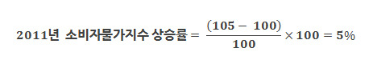
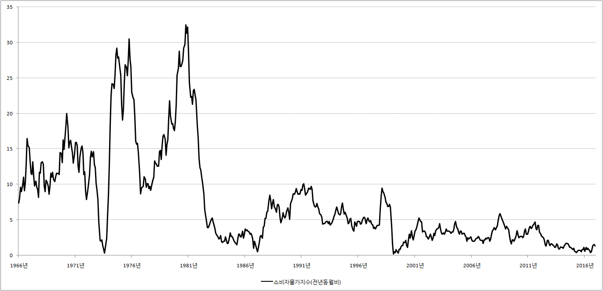

■ 소비자물가지수
1.소비자물가지수(CPI : consumer price index)
소비자물가지수는 소비자에게 중요한 여러 가지 물건의 가격이 과거에 비해 얼마나 뛰었나? 조사를 한 것입니다.
만약 이들 물건의 가격이 과거에 비해 뛰었다면 소비자물가지수가 뛰었다고 말하고, 이들의 가격이 과거에 비해 하락했다면 소비자물가지수가 내렸다고 합니다.
2.소비자물가지수 조사 품목
세상에는 수천, 수만 가지의 물건이 있습니다. 그리고 소비자들이 사용하는 물건의 종류도 수천, 수만 가지가 됩니다. 따라서 소비자들이 사용하는 모든 물건의 가격을 조사해서 소비자물가지수를 작성하는 것은 무리가 있습니다.
그래서 경제학자들이 잔머리를 굴렸습니다. 세상에 있는 수만가지 물건 중에서, 소비자들이 많이 사용하는 물건 460개를 골라서 이들의 가격을 조사하기로 한 것입니다.
소비자물가지수를 작성하는데 포함되는 물건에 어떤것들이 있는지 궁금하신 분들은 아래의 링크를 클릭하시면 됩니다.
3.소비자물가지수를 계산하는 공식
예를 들어 2010년에 소비자들이 사용하는 물건 460개의 가격을 조사했더니 모두 합쳐서 1000원이었다고 합시다. 그러면 이것을 100으로 잡습니다. 그리고 이것을 2010년의 소비자물가지수라고 합니다.
그리고 나서 2011년에 소비자들이 사용하는 물건 460개의 가격을 조사했더니 모두 합쳐서 1050원이었다고 합시다. 그러면 2011년의 소비자물가지수는 얼마가 될까요? 1000원을 100으로 잡았으니 1050원은 105가 됩니다.
{kind=link}
2010년과 2011년의 소비자물가지수를 구했으니 소비자물가지수 상승률을 구하는 것은 간단합니다.
{kind=link}
위의 공식을 이용해 계산해보면 2011년의 소비자물가지수는 2010년에 비해 5%가 상승한 것이 됩니다.
{kind=link}
4.소비자물가지수 그래프
소비자물가지수가 그동안 얼마나 뛰었는지 궁금할 때 우리는 통계청이나, 한국은행 등에서 소비자물가지수 관련 자료나 그래프를 찾아보면 됩니다. 그렇다면 그동안 소비자물가지수는 얼마나 뛰었을까요? 아래의 그래프를 보면 소비자물가지수가 끝없이 상승합니다.
※ 소비자물가지수 그래프

따라서 소비자물가지수를 날 것 그대로 봐서는 물가가 지난해에 비해서 얼마나 뛰었는지, 또 지난 달에 비해서는 얼마나 뛰었는지 알 수 없습니다. 그래서 신문과 방송에서는 소비자물가지수를 지난해 같은 달과 비교한 전년동월비를 많이 이야기 합니다. 흔히 ‘지난해 같은 달에 비해 물가가 1% 뛰었다’는 식으로 이야기합니다.
※ 소비자물가지수 전년동월비

{kind=link}
5.소비자물가지수의 의미
개인적으로 경제공부를 처음 시작할 때는 물가가 얼마나 중요한지 몰랐습니다. 물가는 그냥 ‘물건의 가격’ 그 이상도 그 이하도 아니었습니다.
따라서 저의 관심은 금리, 환율, 그리고 주가에 쏠려 있었습니다. 그런데 공부를 하다 보니 신기한 현상과 자주 마주쳤습니다. 금리를 파고 또 파고 들어가다 보니 결국 그 바닥에는 물가가 있었습니다. 환율 역시 마찬가지였습니다. 환율을 파고 또 파고 들어가다 보니 어느 순간 물가가 나왔습니다. 주가 역시 마찬가지였습니다. 일확천금의 꿈을 꾸며 열심히 주식 책을 읽었는데 결국엔 물가와 마주치게 되었습니다.
조금 과정하면 물가만 제대로 예측해도 금리, 환율, 주가는 거저 먹기라는 생각이 들 정도였습니다. 그리고 각국의 중앙은행이 다른 모든 것을 포기하고 오로지 물가 하나만 잡겠다고 선언한 이유도 그때서야 알게 되었습니다. 물가 상승이 가져 오는 국민들의 원성이 무서워서가 아니라 물가만 잡으면 금리, 환율, 주가는 꿀이었기 때문에 물가에 인생을 걸었던 것이었습니다.
6. 소비자물가지수 관련 자료를 얻을 수 있는 사이트
소비자물가지수를 작성하는 기관은 통계청입니다, 따라서 통계청 사이트를 이용하면 소비자물가지수에 대한 통계자료만이 아니라 소비자물가지수에 대한 완벽한 사용설명서(?)도 구할 수 있습니다.
쉽게 말해서 소비자물가지수가 무엇인지, 그리고 소비자물가지수를 작성하는 자세한 계산식과 계산방법... 기타 등등 소비자물가지수 사용설명서의 끝판 왕이라 할 만큼 방대한 자료가 있습니다. 소비자물가지수에 대해 제대로 공부해보고 싶다면 아래의 링크를 클릭하시면 됩니다.
한편 소비자물가지수에 대한 통계자료는 통계청 국가통계포털이나 한국은행 경제통계시스템에서 아래 순서대로 하나하나 클릭하시면 됩니다.
※ 통계청 : 국가통계포탈 → 물가·가계 → 물가 → 소비자물가조사
※ 한국은행 : 경제통계시스템 → 7.물가 → 7.4 소비자물가지수